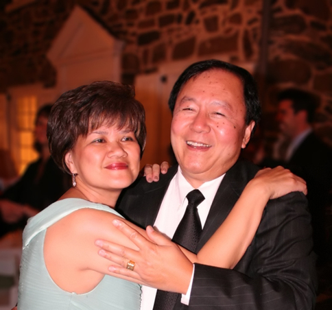

What I'm Thankful for

My dad
He embodies discipline, unsurprising since he almost became a priest. He often told me stories of his ambition as a student. How he was always #1 in his classes. How he would aggressively compete with his top classmates. But he can also be stubborn when he thinks he's right. He was supposed to be a lawyer until he got into an argument with a teacher in front of his law school class and stormed out. His classmates tried to talk him into apologizing, but he refused to return to the class because he was convinced he was right. And yet somehow, he never loses his cool when we debate, despite my increasingly impatient tone.
He always respects my privacy, in an extreme sense; he never displays an interest in my personal life. He would knock on my bedroom door before entering. He would stay upstairs when I had friends over. He isn't a very personal conversationalist, preferring instead to talk about business or history or current events, and my car-rides with him as a child were often quiet, or lecture-like, or some lame joke he heard somewhere. He likes to laugh at his own jokes, even if you're not laughing with him. Not just a chuckle, but a whole-hearted guffaw. And, red-faced, he struggles to calm down, sometimes concluding with a violent cough. But he always expresses his affection. When he enters a room, we give each other a high five, or else he rubs my shoulders if I'm preoccupied. Every night, he would come by my room to say good night and "I love you."
He used to have a temper. Like many parents of his generation, he believed in belting as a proper form of punishment. And when it was whipping time, he was red-faced, like when he laughs at his own jokes, without the pleasantness. But one day — I think it was 6th grade — he said we had outgrown it, and he never hit us again. In fact, he's rarely lost his cool since then.
I nominate him as the patron saint of husbands. After 2 failed marriages, he married my mom, whom he's been with for 24 years. My mom can be sassy and bossy toward him, criticizing his choice of clothes or commanding him to a thankless errand, and he never complains. He has the ability to disarm her anger with a corny joke, followed by his self-congratulatory laugh.
As a child, I used to think that he had the strongest handshake in the world, and my futile arm-wrestling matches confirmed his superhuman strength. I thought he was fearless, walking bravely into dark rooms; I thought he was incapable of crying. Then I saw him cry — the one and only time — when we watched Casper many years ago. During a particularly sad scene, I turned to look at him. His face looked normal, but his eyes were misty. I wasn't completely sure, and I didn't bring it up, until weeks later, when I overheard him confess to a friend that he hates that movie because it made him cry. He laughed.
More recently, I learned my dad is terrified of the dentist, though I haven't seen this firsthand. And my mom told me that my dad is scared to be home alone because he hears things. His handshake is still incredibly firm though.
My mom
She's the yin to my dad's yang. If my dad is the intellectual, my mom is the emotional. If my dad is impersonal, my mom is uber-personal, always curious, always wanting to be involved. I remember that she wished she had a daughter — in addition, not in place of — and I wish she did too, so that my brother and I could've had a mediator, and so that my mom could've had her "best friend." She used to always say that when she wanted to get something out of me. Come on. Tell your best friend. As I got older, I tried to be that for her.
I remember the first time I saw my mom as not my mom. Not long ago, I went with her to her high school reunion in Vegas. Everyone went up to give a quick speech, giving quick updates of their lives: where they live, what their children are doing, and sometimes a few words about their high school days. When my mom went up, she recalled how shy she was when they were students, with the body language of a young girl speaking nervously in front of her class. And in that moment, I saw the little sister I always wanted.
She puts her family before herself, always. And as a result, she works incredibly hard. Two jobs, most of her life. One of her jobs at the moment is at the health center of USC, working directly with students and student athletes. The experience has helped her understand my generation and my brother and I much better, and I'm glad she's enjoying the experience. She especially gets a kick out of people recognizing her as my mother, which she'll always tell me about, and which happens surprisingly often; I only went to the health center once in 4 years.
Oftentimes, I feel obliged to become wealthy as soon as possible, so my mom can stop working and I can pay my parents back for everything they've done for me. But I've realized that their goal in all of this is for me to be happy. And what makes me happy is helping others have the opportunities for happiness that I've had. And I shouldn't have money as a top priority, while I'm figuring out how exactly I can be most useful.
She always had the right impression of past girlfriends, not afraid to tell me I could do better. I should have listened. And when things ended with girlfriends she liked, she would ask what happened, and then would encourage me to find better. Which, by the time we spoke, was already my plan. She has a tendency to talk to me like I'm still a child, like most moms do. I can't count how many times she's told me not to eat in public the way I eat at home: filling my plate obscenely. Even last week, when I moved into my new apartment, she made sure that I was being a good roommate. A humbling reminder: we are children after all.
← Back to essays